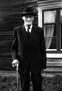

Erik Albert Kanon
Fältjägare på Roten 63 Kanon i Kamlunge, Nederkalix fs. Blev 93 år.
| Född: | 1857-05-16 Kamlunge, Nederkalix fs, Kalix sn. [1] | |
|---|
| Döpt: | 1857-05-21 Kamlunge, Nederkalix fs, Kalix sn. [2] | Dopvittnen: Bonden Lars Olof Larsson och hans Hustru Brita Cajsa; Fourir Bonden Nils Gust. Carlsson och hans Hu. Babba Cajsa Sandberg. Alla från Kamlunge. |
|---|
| Levde: | 1868 Kamlunge, Nederkalix fs, Kalix sn. [3] | |
|---|
| Änkling: | 1921-10-26 Kamlunge, Töre fs, Kalix sn. [4] | |
|---|
| Levde: | 1930 Kamlunge, Töre fs, Kalix sn. [5] | |
|---|
| Levde: | 1939 Kamlunge, Töre fs, Kalix sn. | |
|---|
| Död: | 1950-06-19 Kommunalhemmet, Töre kbfd, Nederkalix sn. [6] | |
|---|
| Lysning: | 1878-09-08 Kamlunge, Nederkalix fs, Kalix sn. [7] | |
|---|
| Vigsel: | 1878-10-12 Kamlunge, Nederkalix fs, Kalix sn. [8] | |
|---|
| Levde Soldat: | 1890 Kamlunge, Nederkalix fs, Kalix sn. [9] | |
|---|
| Levde Soldat: | 1900 Kamlunge, Nederkalix fs, Kalix sn. [10] | |
|---|
| Levde: | 1908 Kamlunge, Nederkalix fs, Kalix sn. [11] | Förre jägarsoldat, Läg.ägare 1 |
|---|
| Levde: | 1909 Kamlunge, Töre fs, Kalix sn. [12] | |
|---|
| Levde: | 1920 Kamlunge, Töre fs, Kalix sn. [12] | F.d. soldat. Läg.ägare 1 |
|---|
Personhistoria
| Årtal | Ålder | Händelse |
|---|
| 1857 |
|
Födelse 1857-05-16 Kamlunge, Nederkalix fs, Kalix sn [1] |
| 1857 |
5 dagar |
Dop 1857-05-21 Kamlunge, Nederkalix fs, Kalix sn [2] |
| 1858 |
1 år |
Systern Maria Eriksson föds 1858-09-05 Kamlunge, Nederkalix fs, Kalix sn [13] |
| 1864 |
7 år |
Brodern Karl Eriksson föds 1864-07-14 Kamlunge, Nederkalix fs, Kalix sn [3] |
| 1868 |
|
Levde 1868 Kamlunge, Nederkalix fs, Kalix sn [3] |
| 1878 |
21 år |
Lysning Anna Henrika Johansdotter Blombäck 1878-09-08 Kamlunge, Nederkalix fs, Kalix sn [7] |
| 1878 |
21 år |
Vigsel Anna Henrika Johansdotter Blombäck 1878-10-12 Kamlunge, Nederkalix fs, Kalix sn [8] |
| 1879 |
22 år |
Dottern Erika Eriksson föds 1879-06-24 Kamlunge, Nederkalix fs, Kalix sn [14] |
| 1881 |
23 år |
Dottern Hilda Maria Eriksson föds 1881-04-09 Kamlunge, Nederkalix fs, Kalix sn [14] |
| 1881 |
24 år |
Fadern Erik Johansson-Kanon dör 1881-08-03 Kamlunge, Nederkalix fs, Kalix sn [15] |
| 1883 |
26 år |
Sonen Johan Albert Eriksson föds 1883-07-01 Kamlunge, Nederkalix fs, Kalix sn [14] |
| 1885 |
28 år |
Sonen Edvard Eriksson föds 1885-10-19 Kamlunge, Nederkalix fs, Kalix sn [14] |
| 1886 |
29 år |
Systern Cajsa Lisa Kanon dör 1886-07-16 Karlsborg, Nederkalix sn [16] |
| 1887 |
30 år |
Sonen Karl Eriksson föds 1887-12-25 Kamlunge, Nederkalix fs, Kalix sn [14] |
| 1890 |
|
Levde Soldat Anna Henrika Johansdotter Blombäck 1890 Kamlunge, Nederkalix fs, Kalix sn [9] |
| 1890 |
32 år |
Dottern Gerda Eriksson föds 1890-05-03 Kamlunge, Nederkalix fs, Kalix sn [17] |
| 1893 |
35 år |
Dottern Alma Viktoria Eriksson föds 1893-01-29 Kamlunge, Nederkalix fs, Kalix sn [18] |
| 1895 |
37 år |
Dottern Selma Eriksson föds 1895-04-29 Kamlunge, Nederkalix fs, Kalix sn [18] |
| 1895 |
38 år |
Dottern Alma Viktoria Eriksson dör 1895-07-04 Kamlunge, Nederkalix fs, Kalix sn [18] |
| 1898 |
41 år |
Dottern Alma Viktoria Eriksson föds 1898-07-11 Kamlunge, Nederkalix fs, Kalix sn [18] |
| 1899 |
42 år |
Modern Elisabeth Larsdotter dör 1899-07-04 Kamlunge, Nederkalix fs, Kalix sn [19] |
| 1900 |
|
Levde Soldat Anna Henrika Johansdotter Blombäck 1900 Kamlunge, Nederkalix fs, Kalix sn [10] |
| 1908 |
|
Levde Anna Henrika Johansdotter Blombäck 1908 Kamlunge, Nederkalix fs, Kalix sn [11] |
| 1909 |
|
Levde Anna Henrika Johansdotter Blombäck 1909 Kamlunge, Töre fs, Kalix sn [12] |
| 1920 |
|
Levde Anna Henrika Johansdotter Blombäck 1920 Kamlunge, Töre fs, Kalix sn [12] |
| 1921 |
64 år |
Makan Anna Henrika Johansdotter Blombäck dör 1921-10-26 Kamlunge, Töre fs, Kalix sn [4] |
| 1921 |
64 år |
Änkling 1921-10-26 Kamlunge, Töre fs, Kalix sn [4] |
| 1930 |
|
Levde 1930 Kamlunge, Töre fs, Kalix sn [5] |
| 1936 |
78 år |
Dottern Erika Eriksson dör 1936-02-22 Nederkalix fs, Kalix sn [20] |
| 1939 |
|
Levde 1939 Kamlunge, Töre fs, Kalix sn |
| 1939 |
82 år |
Systern Maria Eriksson dör 1939-08-01 Börjelsbyn 6:13, Börjelsbyn, Nederkalix fs, Kalix sn [20] |
| 1950 |
93 år |
Död 1950-06-19 Kommunalhemmet, Töre kbfd, Nederkalix sn [6] |
Källor
| [1] | Nederkalix fs C:6 (1857-1859) fol. 269 k.9/10, AI:7A (1849-1859) fol. 73, AI:10A (1879-1890) fol. 148 r.16-23 |
| |
| | |
| [2] | Nederkalix fs C:6 (1857-1859) fol. 269 k.9/10 |
| |
| | |
| [3] | Nederkalix AI:8A (1859-1868) fol. 89 k.4/10 |
| |
| | |
| [4] | Töre F:1 (1920-1925) 43/1921 fol. 93 k.3/3 |
| |
| | |
| [5] | Töre Försbok 702/1930 s.62 k.3/3 |
| |
| | |
| [6] | DB, FS / DOR 50-51 |
| |
| | |
| [7] | Nederkalix E: |
| |
| | |
| [8] | Nederkalix HFL fol. 93 |
| |
| | |
| [9] | ANNO 1890 |
| |
| | |
| [10] | ANNO 1900 |
| |
| | |
| [11] | Nederkalix AIIA:2 (1900-1910) fol. 32 k.1/6 |
| |
| | |
| [12] | Töre AIIA:1B (1909-1920) fol. 548 k.5/6 |
| |
| | |
| [13] | Nederkalix AI:8A (1859-1868) fol. 90 k.4/10 |
| |
| | |
| [14] | Nederkalix AI:10A fol. 148 r.16-23 |
| |
| | |
| [15] | Nederkalix AI:10A (1879-1890) fol. 149 |
| |
| | |
| [16] | Nederkalix AI:9C (1869-1878) fol. 669 |
| |
| | |
| [17] | Nederkalix C:8 1890/150 k.9/12,k AI:11A fol. 136, Mtl Stockholms stad och län 1971 |
| |
| | |
| [18] | Nederkalix AI:11A fol. 136 |
| |
| | |
| [19] | Nederkalix fol. 138/2 |
| |
| | |
| [20] | DB, FS / DOR 52-60 |
| |
|
 |
| 1905. Anna och Erik Kanon. |
| |
|
| Erik Kanon. |
| |
|
| 1942-05-16. Erik Kanon 85 år, Kamlunge, Töre fs, Kalix sn. |
| |
|  |
| 1942-05-16. Erik Kanon 85 år, Kamlunge, Töre fs, Kalix sn |
|

{kind=link}
{kind=link}
{kind=link}